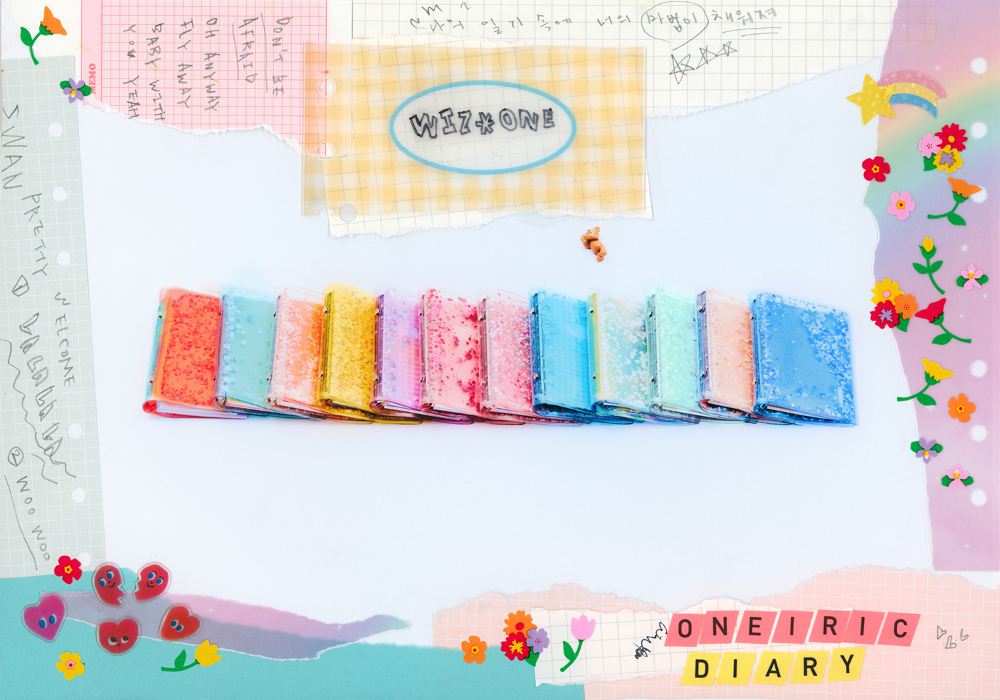
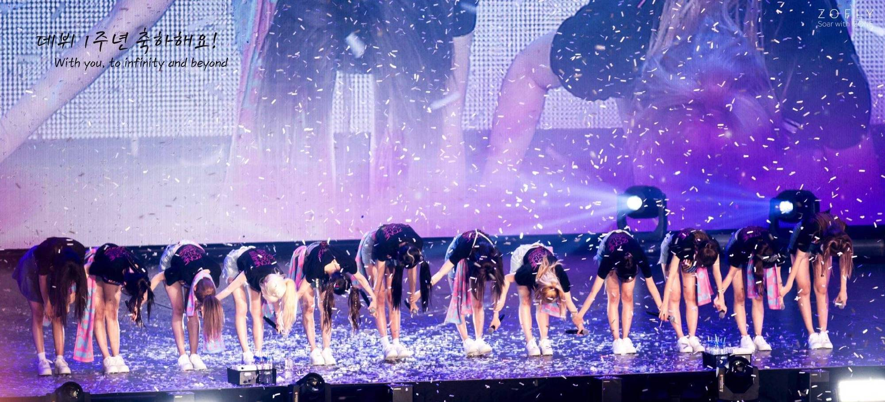

IZ*ONE 3rd Mini Album
"Oneiric Diary"
Released 2020.06.15
装满了你的魔法，
汇聚成童话”
IZ*ONE第三张迷你专辑《Oneiric Diary (幻想日记)》，褪去邻家少女的形象，
以"优雅的领袖魅力"和"日常少女"的反差形象展现在观众面前。
专辑中讲述了12名少女获得平时梦寐以求写满童话般想象的日记本，
而只要在那平凡的日记本上增加魔法般的力量，想象就会成为现实的故事。
以“幻想日记”这一主题组成的具有各自不同的魅力的歌曲组成专辑的整体结构。

1. “Welcome to my IZ*Land"

2. Secret Story of the Swan
“像我故事中的主人公一样Fly away
直至曾经想象的所有瞬间 即将到来的那一刻
为你翩翩起舞 Like swan swan swan……”
主打曲《幻想童话》是表现12名IZ*ONE成员多彩美感的Cinematic EDM舞曲，
通过魔法般的力量深入人心。
歌词通过表达“如果一起做梦，谁都能成为童话的主人公”向听众传达力量，
这也正是唯有IZ*ONE的舞台表演才能表现出的具有压倒气势和多彩魅力。
“然而就算所有人都嘲笑我
也梦想着和你拥有共同的梦 能去到我们所期盼的地方”
3. Pretty
“无法掩盖 展现原本的模样 就这样 You're so pretty!”
以明亮清爽的旋律，向拥有梦想的所有人发送积极的信息。
“You're so pretty Oh pretty
You aways be my Sweety
Gotta go We've same dream”
4. Merry-Go-Round & 5. Rococo
“现在踏着舞步 步伐更加轻盈 宛若旋转木马 饱含我的真心 永不停歇”
“在这五彩斑斓的空间里 当灿烂的灯光照耀时 邀我去往精彩的世界”
不想醒来的梦中的美丽瞬间就像永远旋转的旋转木马,
创造一个只有IZ*ONE的梦想般的新世界的。
6. With*One
由成员参与创作的fansong慰劳了与粉丝们度过的艰辛时光,
表达了想要一直守护在身边的心情。

《Oneiric Diary (幻想日记)》专辑通过多种题材的音乐和歌词,
表现出和粉丝们一起成长的IZ*ONE独有的认同感。
专辑中处处都包含着如果一起和IZ*ONE努力,梦想就会变成现实的信息,
为所有人的梦想加油助威！